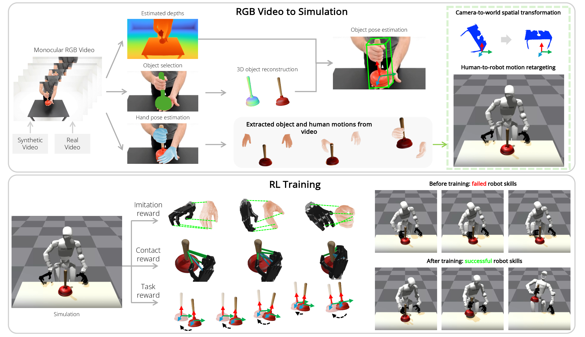

DexMan: Learning Bimanual Dexterous Manipulation from Human and Generated Videos
ICLR 2026 submission #4832
Abstract
We present DexMan, an automated framework that converts human visual demonstrations into bimanual dexterous manipulation skills for humanoid robots in simulation. Operating directly on third-person videos of humans manipulating rigid objects, DexMan eliminates the need for camera calibration, depth sensors, scanned 3D object assets, or ground-truth hand and object motion annotations. Unlike prior approaches that consider only simplified floating hands, it directly controls a humanoid robot and leverages novel contact-based rewards to improve policy learning from noisy hand–object poses estimated from in-the-wild videos. DexMan achieves state-of-the-art performance in object pose estimation on TACO, with absolute gains of 0.08 and 0.12 in ADD-S and VSD. Meanwhile, its RL policy surpasses previous methods by 19% success rate on OakInk-v2. Furthermore, DexMan can generate skills from both real and synthetic videos, without the need for manual data collection and costly motion capture, and enabling the creation of large-scale, diverse datasets for training generalist dexterous manipulation.
Method Overview

Overview of DexMan. DexMan is a framework for acquiring robot skills from human videos. Top: From monocular input, DexMan reconstructs object meshes, estimates depth, and recovers 3D hand–object motions, then retargets these to a full humanoid robot in simulation (Isaac Gym) rather than floating hands. Bottom: A residual RL policy refines retargeted motions to reproduce object trajectories, guided by human motion and contact priors. DexMan introduces a contact reward that encourages stable grasps for effective RL training, enabling the robot to complete demonstrated manipulation tasks.
Skills Learned from Veo3 Demonstrations
* All demo videos are rendered by Blender
Prompt to Veo3
A stationary third-person camera from a very high angle and far distance shows a man sitting in the front of a table. His body does not move. Both hands and all fingers are visible at all times. A microscope was placed on the table. Both hands lift up the microscope from the top and the bottom and put down on the table. No other objects are present in the scene.
Prompt to Veo3
A stationary third-person camera from a high angle and far distance shows a man with smiling face sitting in the front of a table. His body does not move. Both hands and all fingers are visible at all times. A vegetable peeler was placed on the table. The right hand lifts up the peeler, hands over to the left hand, and put down on the table. No other objects are present in the scene.
Prompt to Veo3
A stationary third-person camera from a high angle and far distance shows a man with smiling face sitting in the front of a table. His body does not move. Both hands and all fingers are visible at all times. A pot with two handles was placed on the table. Both hands lift up the pot by grasping the handles and put down on the table. No other objects are present in the scene.
Prompt to Veo3
A stationary third-person camera from a very high angle and far distance shows a man sitting in the front of a table. His body does not move. Both hands and all fingers are visible at all times. A skateboard was placed on the table. Both hands lift up the skateboard by grasping its body, and put down on the table. No other objects are present in the scene.
Prompt to Veo3
A stationary third-person camera from a high angle and far distance shows a man with smiling face sitting in the front of a table. His body does not move. Both hands and all fingers are visible at all times. A tire was placed on the table. The tire is small size, which can be grasped by the person's hand. Both hands lift up the tire and put down on the table. No other objects are present in the scene.
Prompt to Veo3
A stationary third-person camera from a very high angle and far distance shows a man sitting in the front of a table. His body does not move. Both hands and all fingers are visible at all times. An alarm clock was placed on the wooden table. The right hand lifts up the alarm clock, hands over to the left hand, and put down on the table. No other objects are present in the scene.
Prompt to Veo3
The right hand lifts up the small strainer, hands over to the left hand, and put down on the table. No other objects are present in the scene.
Prompt to Veo3
A stationary third-person camera from a very high angle and far distance shows a man sitting in the front of a table. His body does not move. Both hands and all fingers are visible at all times. A binocular was placed on the wooden table. The right hand lifts up the binocular, and put down on the table. No other objects are present in the scene.
Prompt to Veo3
A stationary third-person camera from a very high angle and far distance shows a man sitting in the front of a table. His body does not move. Both hands and all fingers are visible at all times. A book was placed on the table. Both hands lift up the book, and put down on the table. No other objects are present in the scene.
Prompt to Veo3
A stationary third-person camera from a very high angle and far distance shows a man sitting in the front of a table. His body does not move. Both hands and all fingers are visible at all times. A corkscrew was placed on the table. The right hand lifts up the corkscrew, hands over to the left hand, and put down on the table. No other objects are present in the scene.
Prompt to Veo3
A stationary third-person camera from a very high angle and far distance shows a man in the front of a table. His body does not move. Both hands and all fingers are visible at all times. A plunger was placed on the table. Both hands lift up the plunger by grasping the top and bottom, and put down on the left hand. No other objects are present in the scene.
Prompt to Veo3
A stationary third-person camera from a very high angle and far distance shows a man sitting in the front of a table. His body does not move. Both hands and all fingers are visible at all times. A stapler was placed on the wooden table. The right hand lifts up the stapler, and put down on the table. No other objects are present in the scene.
Prompt to Veo3
A stationary third-person camera from a very high angle and far distance shows a man sitting in the front of a table. His body does not move. Both hands and all fingers are visible at all times. A tape dispenser was placed on the table. The right hand pick up the tape dispenser from the tabletop and put down on the table. No other objects are present in the scene.
Prompt to Veo3
A stationary third-person camera from a very high angle and far distance shows a man sitting in the front of a table. His body does not move. Both hands and all fingers are visible at all times. A wine bottle was placed on the table. The right hand pick up the wine bottle from the tabletop and put down on the table. No other objects are present in the scene.
Prompt to Veo3
A stationary third-person camera from a very high angle and far distance shows a man standing in front of a table. His body remains still, both hands and all fingers are always visible. The man’s right hand reaches out toward a matte black water bottle on the table, grasps it, lifts it up, and performs a clear pouring motion, while the rest of his body stays stationary. No other objects are present in the scene.
Prompt to Veo3
A stationary third-person camera from a high angle and far distance shows a man with smiling face sitting in the front of a table. His body does not move. Both hands and all fingers are visible at all times. A kettle was placed on the table. The right hand picks up the kettle from the tabletop, tilt the kettle, and put down on the table. No other objects are present in the scene.